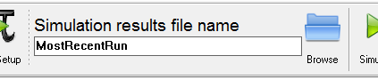
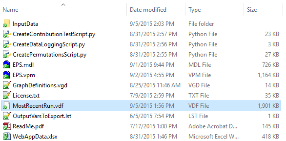
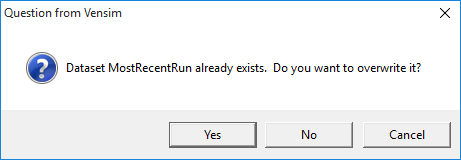
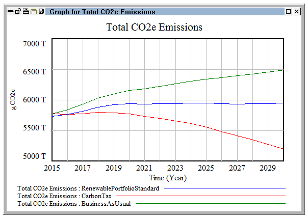
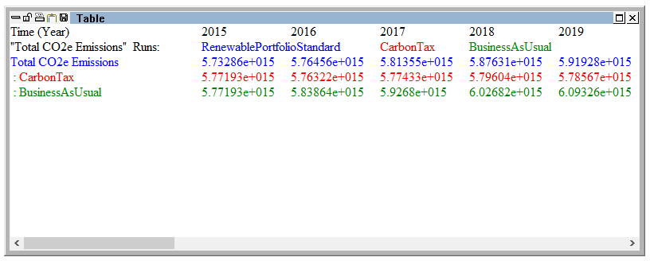
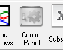
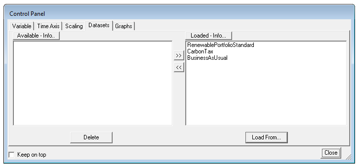

Vensim Model Reader allows you to save scenarios (model runs) under different names. Multiple scenarios can be loaded by Vensim Model Reader at the same time, and output from each loaded scenario will be included on graphs and in tables of results.
Creating Multiple Scenarios
The creation of multiple scenarios is handled via the “Simulation results file name” control near the top center of the screen. When you first open the model, the results file name will be “MostRecentRun.” Here is a screenshot of the relevant control:

Results of each simulation are automatically saved into the same folder as the model file itself. Results files have the extension “.vdf”. For example, after running the model at least once, without changing the default simulation results file name, the contents of the EPS model folder may look similar to the following screenshot (in whith the new .vdf file is selected):

If you perform simulations using the “Sim Setup” and “Simulate” buttons, the process for creating multiple scenarios is very straightforward. Simply edit the name in the “Simulation results file name” control before pressing the “Simulate” button. Results will be saved to a new .vdf file with that name.
If you perform simulations using the “SyntheSim” button, the process is more complex, because you can create an unlimited number of scenarios during the same SyntheSim session. At the time you push the “SyntheSim” button, and while you change the sliders on the “Policy Control Center” sheet, no scenarios will be saved to the model folder. Vensim will wait until you exit SyntheSim mode (by pushing the “Stop Setup” button) before writing any .vdf files.
During the SyntheSim session, you may change the text in the “Simulation results file name” control. Each time you change the name, Vensim remembers the values that all variables had at the time you changed the name and assigns those variables to the name that was in the “Simulation results file name” field before the change. When you are ready to stop using SyntheSim mode and press the “Stop Setup” button, Vensim assigns the current variable values to the name that is then in the “Simulations results file name” field. Then it will create all of the .vdf output files at once. Therefore, in order to create multiple scenarios, the correct procedure is to set the name you want, then set the controls for that scenario, then set the name you want for the next scenario, then set the controls for that scenario, and so forth.
For example, before pressing the SyntheSim button, I change the “Simulation results file name” to “CarbonTaxOnly.” I enter SyntheSim mode, then set the “Carbon Tax” lever to a non-zero value. Then I change the “Simulation results file name” to “RenewablePortfolioStandardOnly.” I set the “Carbon Tax” lever back to zero, then set the “Additional Renewable Portfolio Std Percentage” lever to a non-zero value. Finally, I change the name in the “Simulation results file name” field to “BothPolicies.” Now I set the “Carbon Tax” slider to a non-zero value, then push the “Stop Setup” button. Vensim writes three output files: one with each of my chosen names, containing the associated policy settings and results.
Using the same name as an existing .vdf file at any point during this process will cause Vensim to overwrite that .vdf file with a new one. Vensim will sometimes (not always) prompt you about overwriting a file whose name matches the one in the “Simulation results file name” field at the time you push the “Simulate” or “SyntheSim” button. Once you are in SyntheSim mode, Vensim will never prompt you before overwriting a file whose name matches one you set in the “Simulation results file name” field. Here is a screenshot of the dialogue Vensim will sometimes provide before overwriting a scenario file:

Displaying Multiple Scenarios in Graphs and Tables
It is necessary to have multiple scenarios, ideally with significantly different numerical results, before displaying multiple scenarios on a graph or in a table. Therefore, we will create three scenarios using the following steps:
- Navigate to the “Policy Control Center” sheet
- Change the “Simulation results file name” to “BusinessAsUsual”
- Click the “SyntheSim” button
- Change the “Simulation results file name” to “CarbonTax”
- In the Cross-Sector Policies section, change the “Carbon Tax” slider to 50
- Change the “Simulation results file name” to “RenewablePortfolioStandard”
- Change the “Carbon Tax” slider to 0 and, in the Electricity Supply section, set the “Additional Renewable Portfolio Std Percentage” slider to 0.25
- Click the “Stop Setup” button
Now all three runs are loaded in Vensim, and only the most recent one (the run titled “RenewablePortfolioStandard”) is shown on the built-in graphs, such as the ones located below the sliders on the “Policy Control Center” sheet. To see multiple runs together, you will need to generate graphs in Vensim. (For more details, see the Visualizing Output page of this documentation.) For example, switch to the “Cross-Sector Totals” tab, navigate to the upper left, select the “Total CO2e Emissions” variable, and click the “Graph” button. A graph should appear that looks similar to the following screenshot:

Similarly, you can click the “Table” button to create a table that has values for the “Total CO2e Emissions” variable for all three loaded scenarios. Each scenario will use a single color in the table, which is particularly useful for keeping the scenarios straight when including many different variables in the same table. Here is a screenshot of what the table might look like:

Controlling Which Scenarios are Included in Graphs and Tables
If you have many scenarios, it can be useful to include only some of them on graphs and in tables. To do this, click the “Control Panel” button, located near the right side of the top button bar and shown in the screenshot below:

The “Control Panel” window appears. It includes five tabs. If the tab for “Datasets” is not already selected, click it to make it active. Now, the Control Panel should look like the following screenshot:

You may click on one of the scenarios in the right-hand (Loaded) pane to make it the active scenario. It moves to the top of the list. (The active scenario is the one that is featured on the built-in graphs in Vensim, but all loaded scenarios are featured on graphs and tables you generate in Vensim.)
Select the “RenewablePortfolioStandard” scenario and click the “«” button in the column between the “Available” and “Loaded” panes. The “RenewablePortfolioStandard” scenario moves to the “Available” area and is no longer loaded. It will not appear on charts or tables generated in Vensim. However, the data file, “RenewablePortfolioStandard.vdf,” remains in the model folder until it is deleted or overwritten. It can be moved back to the “Loaded” pane by pushing the “»” button, and it will again be included in graphs and tables.